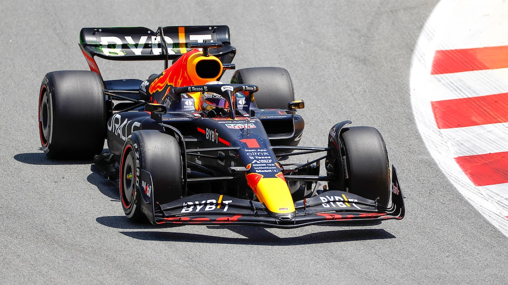

What are Race Cars?
The official definition of Race cars is "a very fast car that is used in professional auto racing" and it perfectly describes what exactly a Race Car is. A Race Car is a Car that is designed and built for speed, performance, and competition.
Some Types of Race Cars
There are many types of Race cars, but i will talk about 3 different types of race cars. These are:
- Open Seaters: The open seaters originated from the early days of the automotive industry and, over the years, evolved into one of the fastest and most extreme forms of racing machines. With pointy noses, lots of aerodynamic aids, and giant wings at the back, open or single-seaters as they are sometimes called resemble low-flying fighting jets, not cars. The engine is positioned just behind the driver, with exposed suspension components, low weight, and big wheels in the back providing power and traction. Due to the extreme engineering approach, unique materials, and enormous power, open seaters are always fast and have sublime handling. The most popular open-seater races are, of course, Formula One and Indy Cars. Still, there are many similar championships like Formula 2 or Formula E (electric cars), which use the same concept, but have less power and performance. True fans of car racing believe that open seaters are the best races to watch. 
- Rally Cars: Very popular in Europe and the rest of the world, rally cars have been an integral part of the global racing scene since the ’50s. A rally car’s basic idea is to use a regular production vehicle (most commonly a compact hatchback) and turn it into the blisteringly fast machine for driving on gravel, mud, tarmac, or snow. Please note that rally cars are not full-blown off-road racers; they are designed to be used on the roads but in challenging conditions and far less ideal than the race cars driven on the circuits. Rally cars are almost always equipped with all-wheel-drive trains, sequential gearboxes, custom-made suspension, and the most advanced safety equipment to cope with such challenging conditions. Contrary to other racing cars, where there is space for only one person (driver) in rally cars, there are two seats for the driver and co-driver.
- Drift Cars: One of the newest and most popular forms of motorsport is drifting, and in the last decade or so, it has swept the car community. For those who don’t know, drifting is the art of driving sideways, very attractive to watch and very difficult to master. From Japan, drifting is very popular with the younger car enthusiast and recently became part of the mainstream racing scene. The object is to perform the most extended drifts, with the vehicle being sideways almost at 90 degrees, and do it at the highest speed. This is how you win at a drift event. However, drift cars demand special preparation in order to do just that. Besides the powerful engines, several unique technological features drift cars have, and no other racing car has. Stuff like negative suspension camber, special handbrake, or closed differentials is all necessary for big, smokey drifts. In most cases, drift cars are so extreme that they are not road legal and can only be used on the track.